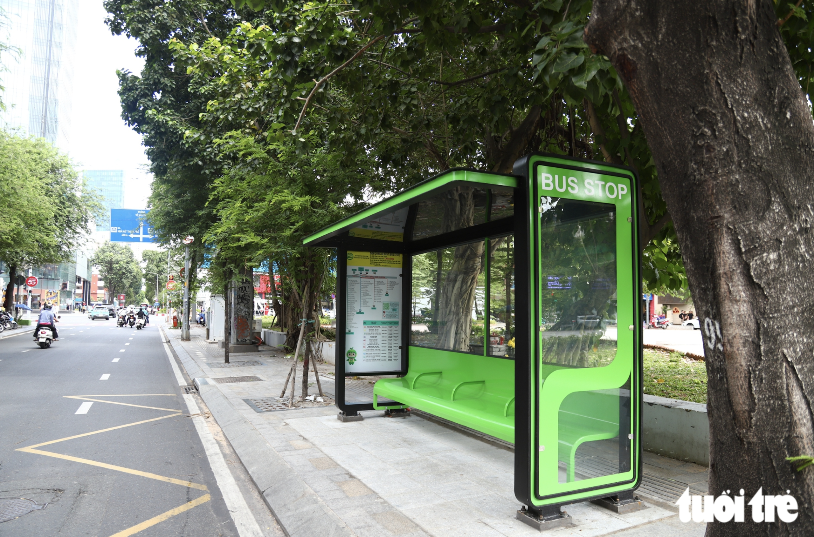

M7 · Listening Test Engine
{{ stateLabel }}
← Test detail
TEF Canada · épreuve 1 sur 4
Compréhension orale
40 questions · 40 minutes · sept groupes de documents
CONSIGNES
{{ r.n }}
{{ r.text }}
Aucune pause n'est autorisée une fois la session lancée : à l'examen, les épreuves sur ordinateur s'enchaînent.
{{ docKickerShort }}
{{ listenChip }}
{{ audioAt }} / {{ audioLen }}
{{ replayLabel }}
{{ qDotsNote }}
{{ qKicker }}
TEF uniquement
{{ qText }}
{{ spokenTitle }}
{{ spokenSub }}
{{ o.letter }}
{{ o.text }}

{{ o.letter }}
{{ o.text }}
{{ feedbackTitle }}
{{ feedbackBody }}
TRANSCRIPTION
« Finalement, je préfère partir le 14, c'est moins cher que le week-end. »
Interviews terminées
Vient ensuite une série d'illustrations. L'audio démarre dès que vous continuez.
{{ b.value }}
{{ b.label }}
{{ scorePct }}
{{ scoreCaption }}
{{ doneTitle }}
{{ doneBody }}
{{ d.value }}
{{ d.label }}
9:41
{{ chromeTitle }}
{{ flagLabel }}
{{ clock }}
{{ progressLeft }}
{{ progressRight }}
{{ autoStripText }}
{{ ctaLabel }}
{{ ctaNote }}
Les 40 questions
Mode entraînement — sans chronomètre ni limite de réécoute : vous pouvez revenir sur n'importe quel document et l'écouter à nouveau.
{{ n.num }}
{{ l.label }}
Aller à la première sans réponse · 9
Retour à l'épreuve
{{ sheetTitle }}
{{ sheetBody }}
{{ sr.label }}
{{ sr.value }}
{{ sheetPrimary }}
{{ sheetSecondary }}
{{ sheetNote }}
{{ st.label }}
Audio beats (mock)
One question is a seven-beat audio sequence. Mock runs it on its own clock; tap a beat to hold the screen there.
{{ bt.label }}
Session mode
{{ md.label }}
Scenario flags
Each flag switches one branch of this flow. Toggle it on the left; tap the pill to jump to the step it changes.
{{ f.label }}
{{ f.screenLabel }} ↗
ON
{{ f.onText }}
OFF
{{ f.offText }}